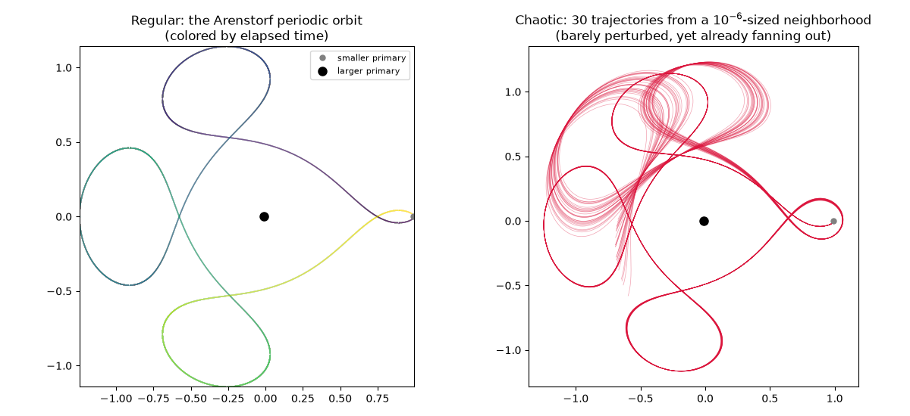
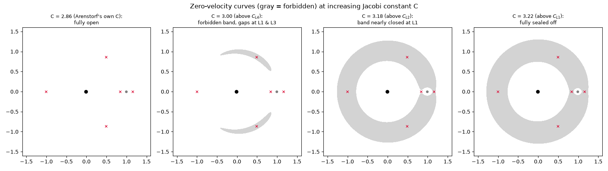
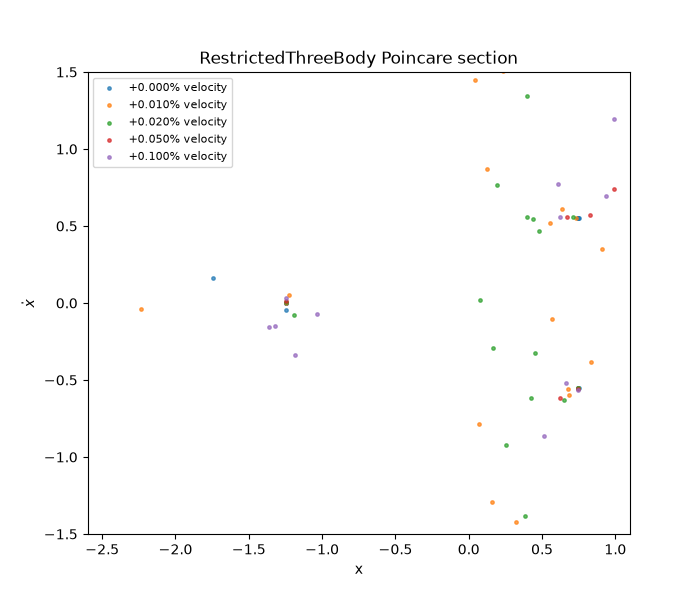
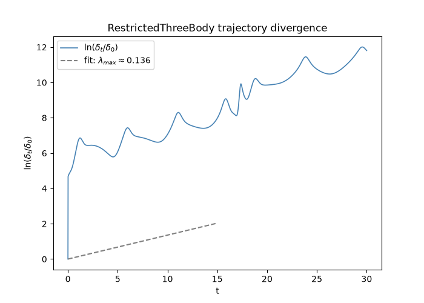
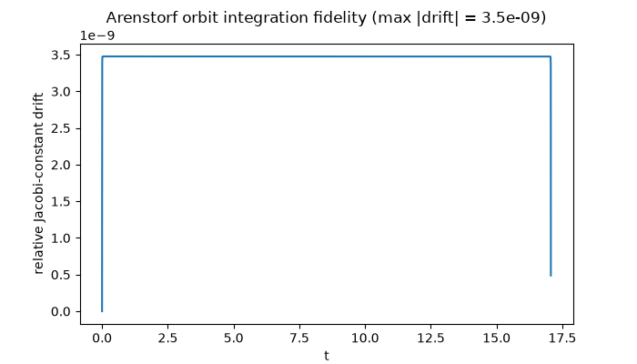

Note
Go to the end to download the full example code.
Restricted Three-Body Problem: Poincare’s Original Chaos#
The planar circular restricted three-body problem (CR3BP) places a massless third body under the gravity of two massive primaries – masses \(1-\mu\) and \(\mu\) in normalized units – that are themselves in a fixed circular orbit about their common center of mass. In the rotating frame co-precessing with the primaries (which then sit fixed at \((-\mu, 0)\) and \((1-\mu, 0)\)), the third body’s position \((x, y)\) obeys
with the \(\mp 2\dot y\), \(\pm 2\dot x\) terms the rotating frame’s Coriolis force and the bare \(x\), \(y\) terms its centrifugal force. The CR3BP is historically where chaos was first discovered: studying it in the 1890s, Poincare found that unlike the exactly solvable two-body problem, three-body trajectories can be essentially unpredictable. Yet the same system also genuinely hosts stable, regular orbits – this example contrasts both regimes side by side, using the default initial condition (the classic Arenstorf orbit, a famous periodic solution, at the Earth-Moon-like mass ratio \(\mu = 0.012277471\)) against a barely-perturbed initial condition that is chaotic instead. The animation below also marks the system’s five Lagrange points – the fixed equilibria of the rotating-frame dynamics – alongside the orbit.
import matplotlib.pyplot as plt
import numpy as np
from physicskit.chaos.systems.continuous import RestrictedThreeBody, effective_potential, lagrange_points
from physicskit.chaos.utils.metrics import energy_drift
from physicskit.chaos.visualizers.divergence import plot_lyapunov_divergence, plot_trajectory_ensemble
from physicskit.chaos.visualizers.dynamic_plots import animate_restricted_three_body, plot_colored_trajectory
from physicskit.chaos.visualizers.section import plot_poincare_map
system = RestrictedThreeBody()
A regular orbit: the Arenstorf periodic orbit#
This is one of the most famous test cases in numerical ODE solving: a closed, periodic loop that repeatedly swings in close to the Moon-like smaller primary.
period = 17.0652165601579625588917206249
t, states = system.trajectory(dt=0.0001, n_steps=round(period / 0.0001))
Animation: tracing the periodic loop past the Lagrange points#
Watch the third body repeatedly swing in close to the smaller primary and loop back out – the closed curve that makes this orbit famous only reads as periodic once you see it retrace itself. Both primaries and all five labeled Lagrange points (L1-L5) are drawn as fixed points of the rotating frame, so it’s directly visible how closely the orbit passes each one.
To save the animation to a file instead of (or in addition to) displaying it interactively, use e.g.:
anim.save("restricted_three_body_animation.gif", writer="pillow", fps=30)
A chaotic orbit: barely perturbed#
Nudging the initial velocity by a fraction of a percent destroys the periodicity and produces a trajectory that wanders unpredictably instead.
state0_chaotic = system.initial_state()
state0_chaotic[3] *= 1.001
_, states_chaotic = system.trajectory(state0=state0_chaotic, dt=0.0005, n_steps=60000)
Regular vs. chaotic: colored by time, and a whole neighborhood at once#
A flat, single-color trajectory only asserts “this one is chaotic” – it doesn’t show it. The regular orbit is instead colored by elapsed time, so each successive loop past the smaller primary is visible as a shift in hue. For the chaotic side, rather than trusting one perturbed trajectory, an entire ensemble of 30 initial conditions is launched from a tiny ball (radius \(10^{-6}\)) around the same perturbed state and overlaid: the individual members are indistinguishable at \(t=0\) but visibly fan out into a diffuse spread by the end of the same integration window, which is what “sensitive dependence on initial conditions” actually looks like.
fig, axes = plt.subplots(1, 2, figsize=(12, 5.5))
plot_colored_trajectory(states[:, 0], states[:, 1], np.linspace(0.0, 1.0, len(states)), ax=axes[0], lw=1.0, colorbar=False)
axes[0].set_title("Regular: the Arenstorf periodic orbit\n(colored by elapsed time)")
plot_trajectory_ensemble(
system,
state0=state0_chaotic,
n_members=30,
spread=1e-6,
dt=0.0005,
n_steps=60000,
seed=0,
ax=axes[1],
color="crimson",
lw=0.5,
alpha=0.4,
)
axes[1].set_title("Chaotic: 30 trajectories from a $10^{-6}$-sized neighborhood\n(barely perturbed, yet already fanning out)")
for ax in axes:
ax.plot(1.0 - system.mu, 0.0, "o", color="gray", markersize=5, label="smaller primary")
ax.plot(-system.mu, 0.0, "o", color="black", markersize=8, label="larger primary")
ax.set_aspect("equal")
axes[0].legend(loc="upper right", fontsize=8)
fig.tight_layout()

Why the chaotic orbit can wander so far: zero-velocity curves#
Every trajectory conserves its own Jacobi constant \(C\), and \(C = 2\,\Omega(x, y) - \text{speed}^2\) means a trajectory can only reach points where \(\Omega(x, y) \geq C/2\) – the boundary \(\Omega(x, y) = C/2\) is a zero-velocity curve the body can never cross, since crossing it would require an imaginary speed. Shading the forbidden side (\(\Omega < C/2\), gray) at four increasing values of C recreates the textbook picture: near \(C_{L4} = C_{L5} \approx 2.99\) (the lowest of the five Lagrange-point thresholds) a small forbidden patch first appears around L4/L5; it grows into a band with gaps near L1 and L3; and above \(C_{L1} \approx 3.19\) the band closes completely, splitting the plane into three sealed pieces (around each primary, plus the exterior). The Arenstorf orbit’s own Jacobi constant is only \(C \approx 2.85\) – below every one of these thresholds – so at this energy the entire plane (short of the primaries themselves) is accessible. That is exactly why the barely-perturbed orbit above is free to wander so widely: there is no zero-velocity curve confining it at all.
mu = system.mu
lagrange_pts = lagrange_points(mu)
c_arenstorf = system.jacobi_constant(system.initial_state())
c_l4 = 2.0 * effective_potential(lagrange_pts[3, 0], lagrange_pts[3, 1], mu)
c_l3 = 2.0 * effective_potential(lagrange_pts[2, 0], lagrange_pts[2, 1], mu)
c_l2 = 2.0 * effective_potential(lagrange_pts[1, 0], lagrange_pts[1, 1], mu)
c_l1 = 2.0 * effective_potential(lagrange_pts[0, 0], lagrange_pts[0, 1], mu)
x_grid = np.linspace(-1.6, 1.6, 500)
y_grid = np.linspace(-1.6, 1.6, 500)
xx, yy = np.meshgrid(x_grid, y_grid)
omega_grid = effective_potential(xx, yy, mu)
c_values = [c_arenstorf, (c_l4 + c_l3) / 2.0, (c_l2 + c_l1) / 2.0, c_l1 + 0.03]
c_labels = [
f"C = {c_arenstorf:.2f} (Arenstorf's own C):\nfully open",
f"C = {c_values[1]:.2f} (above $C_{{L4}}$):\nforbidden band, gaps at L1 & L3",
f"C = {c_values[2]:.2f} (above $C_{{L2}}$):\nband nearly closed at L1",
f"C = {c_values[3]:.2f} (above $C_{{L1}}$):\nfully sealed off",
]
fig_h, axes_h = plt.subplots(1, 4, figsize=(16, 4.5))
for ax, C, label in zip(axes_h, c_values, c_labels):
ax.contourf(xx, yy, omega_grid, levels=[-np.inf, C / 2.0], colors="lightgray")
ax.plot(1.0 - mu, 0.0, "o", color="gray", markersize=4)
ax.plot(-mu, 0.0, "o", color="black", markersize=6)
ax.plot(lagrange_pts[:, 0], lagrange_pts[:, 1], "x", color="crimson", markersize=5)
ax.set_aspect("equal")
ax.set_xlim(-1.6, 1.6)
ax.set_ylim(-1.6, 1.6)
ax.set_title(label, fontsize=9)
fig_h.suptitle("Zero-velocity curves (gray = forbidden) at increasing Jacobi constant C")
fig_h.tight_layout()

Poincare’s own method: a surface-of-section map#
This is the actual technique Poincare introduced for this exact problem: instead of plotting the continuous trajectory, sample it only at the instants it crosses the surface \(y = 0\) moving upward (\(\dot y > 0\)), and plot each crossing’s \((x, \dot x)\). Over six periods, the exact Arenstorf orbit returns to just two spots – the signature of an isolated periodic orbit. Perturbing the launch velocity by only a hundredth of a percent already breaks that into a scattered spread of crossings instead, and the largest perturbations shown occasionally produce a wide excursion that lands outside the plotted window entirely – consistent with the unconfined, wide-open energy surface established above.
perturbation_factors = [1.0, 1.0001, 1.0002, 1.0005, 1.001]
initial_states = []
for factor in perturbation_factors:
s0 = system.initial_state()
s0[3] *= factor
initial_states.append(s0)
fig_p, ax_p = plot_poincare_map(
system,
initial_states,
coord=1,
value=0.0,
direction=1.0,
plot_coords=(0, 2),
t_max=6.0 * period,
dt=1e-5,
labels=[f"{100 * (f - 1.0):+.3f}% velocity" for f in perturbation_factors],
)
ax_p.set_xlabel("x")
ax_p.set_ylabel(r"$\dot{x}$")
ax_p.set_xlim(-2.6, 1.1)
ax_p.set_ylim(-1.5, 1.5)

(-1.5, 1.5)
Quantifying it: trajectory divergence#
physicskit.chaos.visualizers.divergence.plot_lyapunov_divergence() works with
any DynamicalSystem – including this
one – with no extra code: two trajectories launched a tiny distance apart
near the perturbed (chaotic) initial condition diverge exponentially.
fig2, ax2, lam = plot_lyapunov_divergence(system, state0=state0_chaotic, t_max=30.0, n_points=2000, seed=0)

Integrator fidelity: the Jacobi constant#
The Jacobi constant is this system’s conserved “energy”; tracking its drift is a good check that the (fixed-step) RK4 integration is accurate enough to trust, especially near the Arenstorf orbit’s close approach to the smaller primary.

Check#
The Arenstorf orbit closes after one period with the Jacobi constant held fixed; L4 sits at (1/2 - mu, sqrt(3)/2) and C_L1 > C_L2 > C_L3 > C_L4; the perturbed orbit is chaotic.
Total running time of the script: (1 minutes 37.819 seconds)